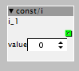

@johanes + @thetechnobear
I've had some free time the last hour waiting for a customer, so I looked into the code.
There is an alternative: I played around with the Constant::Font variable. The result was not so bad. The objects are better to read, but on some objects the alignment/spacing fails 
looks then: <- this size is my heaven on earth.... 14pt.
Not so bad. So it looks that the space computation off the objects are not perfect. But this looks solvable. I think this is what you meant with "hardcodes"
Here a test with several font sizes:

In this case it looks pretty good! This would solve 80% of my wishes
So if you like - I would spend some hours to see if I can fix the alignment problems with a little bit hard testing work. Then only a simple configuration parameter "font" must be added to the preferences to replace the font constant.
It's a little bit like in the Arduino IDE Theres also a generic font size property which helps a lot...
It's only a simple hack - I think but for people like me, with poor eyes, this could be a simple cheap solution.
It's not the zoom feature, but maybe we can make a menue switch with 3 predefined font sizes. This could work a little bit like a zoom function.